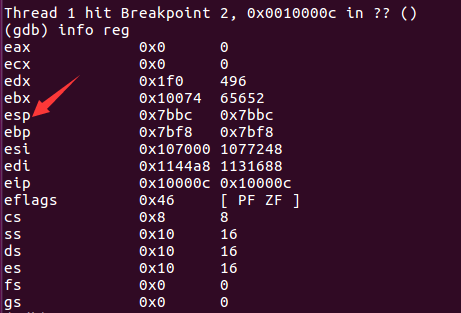
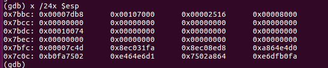
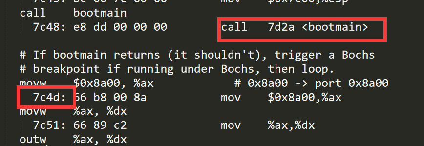

MIT 6.828 HW:BOOT xv6
Environment
首先是环境配置问题
下载xv6:
1 | $ mkdir 6.828 |
接下来编译环境 make
可能会出现一下问题：
1 | warning: File "~/Desktop/MIT6.828/6.828/xv6-public/.gdbinit" auto-loading has been declined by your `auto-load safe-path' set to "$debugdir:$datadir/auto-load". |
解决办法:在系统提示的路径文件中添加上面一行/home/anhongzhan/.gdbinit，注意命名问题，我的用户名是anhongzhan
Exercise: What is on the stack?
Find the address of _start, the entry point of the kernel:
$ nm kernel | grep _start
8010a48c D _binary_entryother_start
8010a460 D _binary_initcode_start
0010000c T _start
In this case, the address is 0010000c.
该任务目的是为了检查_start开始时的栈顶的值
1 | b * 0x10000c |
然后查看各寄存器的值，找到$esp，然后查看栈的数据

找到$esp之后我们查看栈

问题：
Begin by restarting qemu and gdb, and set a break-point at 0x7c00, the start of the boot block (bootasm.S). Single step through the instructions (type si at the gdb prompt). Where in bootasm.S is the stack pointer initialized? (Single step until you see an instruction that moves a value into %esp, the register for the stack pointer.)
Single step through the call to bootmain; what is on the stack now?
What do the first assembly instructions of bootmain do to the stack? Look for bootmain in bootblock.asm.
Continue tracing via gdb (using breakpoints if necessary – see hint below) and look for the call that changes eip to 0x10000c. What does that call do to the stack? (Hint: Think about what this call is trying to accomplish in the boot sequence and try to identify this point in bootmain.c, and the corresponding instruction in the bootmain code in bootblock.asm. This might help you set suitable breakpoints to speed things up.)
解答
问题一：栈指针的初始值是什么？
在地址0x7c00处设置断点，使用c命令运行至此，然后使用si指令逐条运行知道栈指针发生变化
1 | (gdb) b *0x7c00 |
可以看出，栈顶指针被初始化为0x7c00
问题二：调用bootmain时栈中内容？
经查询bootblock.asm，bootmain函数调用地址在0x7d2a，我们使用断点然后continue直接跳转即可
1 | (gdb) b * 0x7d2a |
然后查询寄存器地址，并查询栈中内容
1 | (gdb) info reg |
可以看到栈中最新保存的内容是0x7c4d，在bootblock.asm中我们可以看出，这是调用bootmain函数之后的下一条指令的地址

问题三： bootmain函数执行的第一条指令是什么？
由问题二可知，第一条指令是push指令，将ebp寄存器中的内容入栈，最终目的是为了执行下面的redseg函数
问题四： 找到将eip寄存器修改为0x10000c的指令
bootblock.asm文件中最后有一句
1 | entry(); |
通过查询我们可以知道 0x10018中存放的内容就是0x10000c，eip中负责存储下一条指令的地址，所以该指令将eip寄存器修改为0x10000c